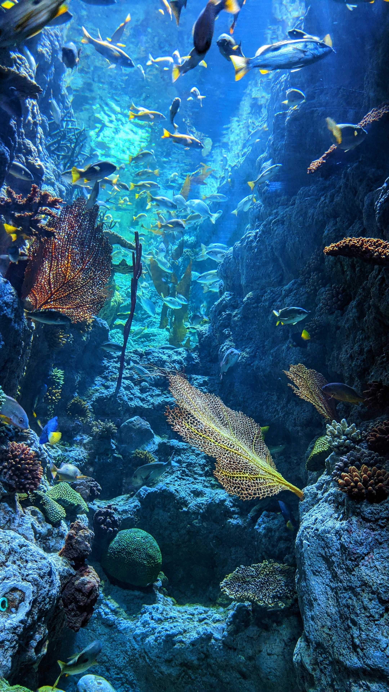

Chihuly Garden and Glass

Geographical Location: North America
Situated in the heart of Seattle, the Chihuly Garden and Glass is a captivating testament to the artistic brilliance of Dale Chihuly. Nestled at the base of the iconic Space Needle, this museum and garden showcase Chihuly's remarkable glass sculptures against the backdrop of the city's skyline. As visitors stroll through the carefully manicured gardens, they encounter an enchanting interplay between Chihuly's vibrant glass creations and the lush Pacific Northwest flora. The outdoor space becomes a living canvas where each glass artwork seamlessly integrates into the natural surroundings, creating a unique and immersive experience.
Inside the museum, the galleries at the Seattle location provide an intimate journey through Chihuly's evolution as an artist. From the delicate and intricate to the bold and dramatic, the glass installations on display capture the essence of Chihuly's creative spirit. The play of natural light through the museum's windows enhances the visual spectacle, illuminating the brilliance of Chihuly's glass sculptures. The Chihuly Garden and Glass in Seattle is more than a museum; it's a celebration of art, innovation, and the harmonious relationship between glass and nature, offering locals and visitors alike a chance to marvel at the extraordinary fusion of creativity and craftsmanship.
Photo Gallery
View from inside the Chihuly Glass Museum looking at the roof

Chihuly glass garden has a beautiful view of the Space Needle
A close-up of glass art pieces looking like flowers

Close-up of blue glass sculptures with wavy edges

Even at night, the sculptures are breathtaking
Great Wall of China

Geographical Location: Asia
Spanning thousands of miles across the rugged landscapes of China, the Great Wall of China stands as an awe-inspiring testament to human ingenuity and determination. Winding its way through hills, mountains, and valleys, the Great Wall is a marvel of ancient engineering and an iconic symbol of Chinese history. As visitors explore this colossal structure, they are transported back in time, imagining the laborious construction efforts that went into creating this monumental defensive barrier.
The Great Wall of China offers a mesmerizing blend of architectural grandeur and natural beauty. From its watchtowers, visitors can absorb panoramic views of the surrounding countryside, appreciating the strategic genius behind the wall's design. The wall's imposing presence, adorned with intricate brickwork and steep staircases, is a tangible link to China's rich cultural heritage. It serves not only as a physical boundary but also as a cultural bridge, connecting generations and embodying the resilience and tenacity of the Chinese people. A visit to the Great Wall is a journey through history, allowing one to marvel at the sheer magnitude of human achievement that has withstood the test of time.
Photo Gallery

The Great Wall spans many different parts of nature
Snow fall on the Great Wall

A sunrise at the Great Wall
A closer look at the paths

Nature surrounds the Great Wall
Great Barrier Reef

Geographical Location: Australia
Stretching across the azure waters of the Coral Sea, the Great Barrier Reef is a natural wonder of unparalleled beauty and ecological significance. Located off the northeastern coast of Australia, this sprawling coral ecosystem is the largest of its kind on Earth, comprising a network of over 2,900 individual reefs and 900 islands. As visitors embark on a journey to explore the Great Barrier Reef, they are met with a kaleidoscope of colors beneath the water's surface – a mesmerizing display of coral formations, vibrant marine life, and crystal-clear waters.
The Great Barrier Reef is a living masterpiece, home to an astonishing diversity of marine species, including vibrant corals, tropical fish, rays, sharks, and sea turtles. Snorkeling or diving amidst the coral gardens offers an intimate encounter with this underwater paradise, where the intricate ecosystems reveal the delicate balance of life beneath the waves. The reef is not merely a stunning natural spectacle; it is also a vital component of the Earth's ecosystem, playing a crucial role in biodiversity and marine conservation. Preserving the Great Barrier Reef is a global imperative, as it faces challenges such as coral bleaching and environmental threats. Visiting this natural wonder becomes not only an opportunity to witness unparalleled beauty but also a call to action for sustainable practices and environmental stewardship. The Great Barrier Reef is a living testament to the wonders of the ocean, inviting all who encounter it to appreciate, respect, and contribute to the ongoing conservation efforts that safeguard this marine treasure for future generations.
Photo Gallery

A distant look at the beaches

The reef is beaming with life
Corals are scattered everywhere
Biodiversity in the reef
A sea turtle